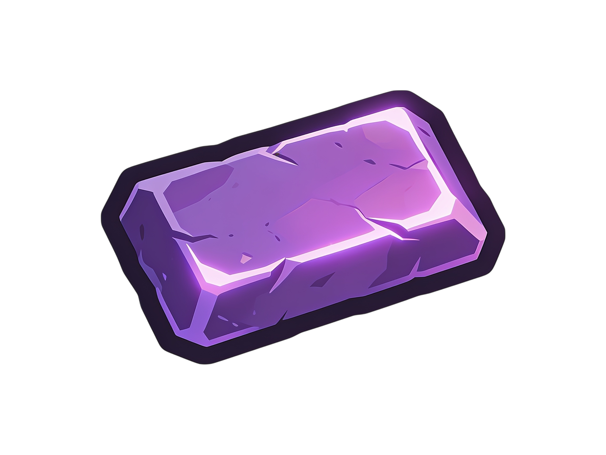
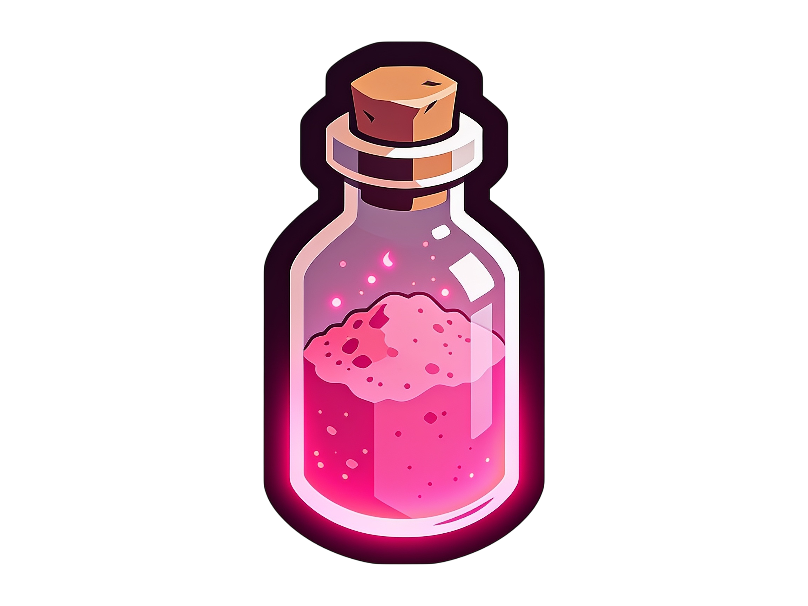

The Luminary Cube
A real Horadric-style container workbench: drop gear and reagents into its grid, then reroll, upgrade, graft, corrupt, recycle, and transmute.
The Horadric grid
The cube holds items in a physical 3×4 container grid. Gear and reagents live inside the building itself; deconstruct it and they spill out beside it.



- Drag and drop between the grid and a pawn's inventory. With True RPG Inventory the cube window and the gear tab share one cursor - pick an item up in one window and drop it in the other.
- Right-click items for context actions; anything that no longer fits is ejected beside the cube.
- Reagents merge into stacks inside the grid, and an Empty cube gizmo dumps everything out.
- Prefer the classic flow? A settings toggle restores the original list window.
Pawns walk to the cube
Using the cube is a real job: gizmos and right-click orders send the pawn over, and the window opens when they arrive. Gear carried by that pawn moves in and out instantly once the window is open - only map-loose items need hauling.
Delivery logistics
With Require delivery on (the default), reagent costs are counted and consumed from the cube's contents, not from thin air: haulers stock the cube like any other workbench, and when your last queued delivery lands while the window is closed, the game pauses and opens the cube so you can get to work. Turn it off and reagents are pulled from anywhere on the map.
Operations & costs
| Operation | Cost | Available on |
|---|---|---|
| Reroll an affix | legendary dust ×3 | Rare and better - 5 rerolls on Rare, 10 above, 8% Greater chance |
| Upgrade to Greater ★ | legendary scrap ×2 | any eligible affix |
| Upgrade to Artifact ✦ | relic dust ×1 + scrap ×3 | Relic-tier items |
| Corrupt | heart ×1 + scrap ×5 | Legendary and Relic gear |
| Make Indestructible | scrap ×10 + temper ×2 | non-ethereal items |
| Graft (apply a Temper) | a stored temper | Legendary and Relic gear |
Recycling - where reagents come from
Special reagents come only from the cube's recycle bills (smelting and burning give vanilla results). Queue a bill and a crafter breaks enchanted gear down:
| Recycled gear | Yield |
|---|---|
| Rare | 2 legendary dust |
| Legendary | 1 legendary scrap + 2 dust |
| Relic ingredient | +2 relic dust on top |
Material conversion means no surplus is wasted: transmute 5 dust → 1 scrap or 1 scrap → 4 dust right in the cube. With delivery logistics on, conversion uses the cube's contents and the products drop straight back into the grid.
Runes addon tie-in
With Runes & Socketables installed, the cube also transmutes three identical runes into the next rune on the ladder - the classic Horadric ascension recipe.